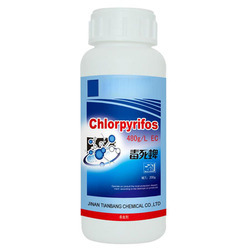
Type: Organophosphate insecticide
Used For: Rice, cotton, soybean
Targets: Insects like caterpillars, beetles, borers
Mode of Action: Inhibits acetylcholinesterase
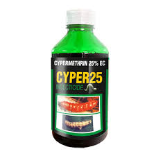
Type: Synthetic pyrethroid
Used For: Vegetables, cereals
Targets: Aphids, moths, leafhoppers
Mode of Action: Affects nerve cells of insects
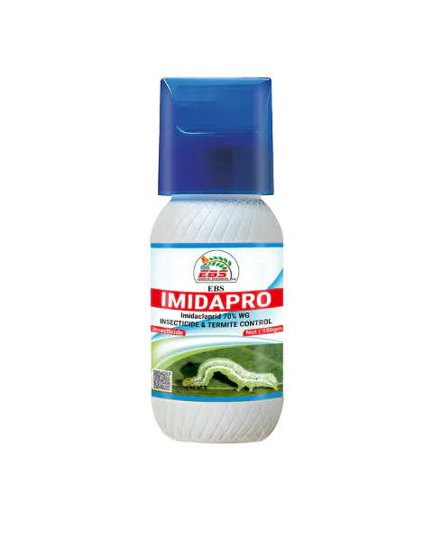
Type: Neonicotinoid insecticide
Used For: Cotton, paddy, sugarcane
Targets: Termites, aphids, whiteflies
Mode of Action: Interferes with nervous system
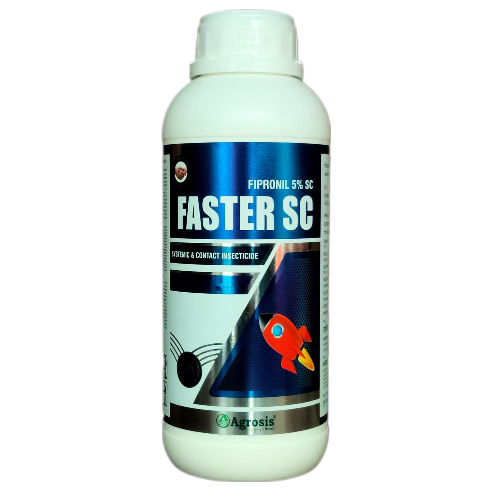
Type: Phenylpyrazole insecticide
Used For: Corn, rice, sugarcane
Targets: Rootworms, stem borers, thrips
Mode of Action: Blocks GABA-gated chloride channels
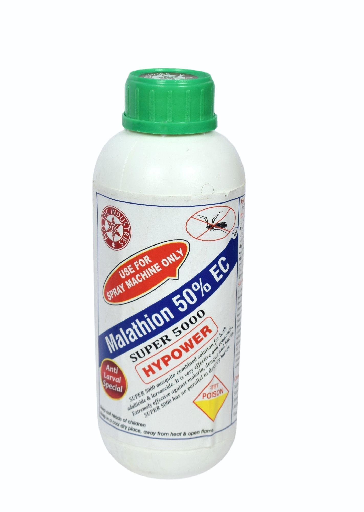
Type: Organophosphate insecticide
Used For: Fruits, vegetables, grains
Targets: Mosquitoes, flies, lice
Mode of Action: Inhibits acetylcholinesterase
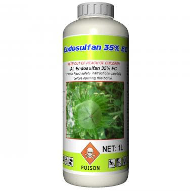
Type: Organochlorine insecticide
Used For: Cotton, tea, vegetables
Targets: Aphids, caterpillars
Mode of Action: Affects CNS of insects
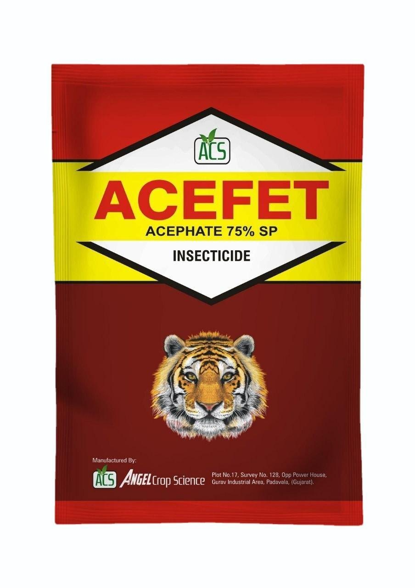
Type: Systemic insecticide
Used For: Tobacco, vegetables
Targets: Aphids, leaf miners
Mode of Action: Disrupts neurotransmission
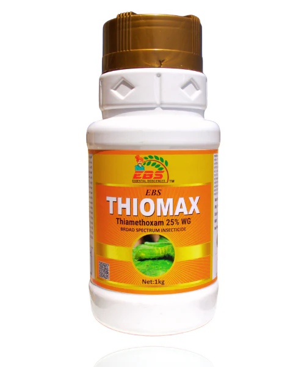
Type: Neonicotinoid insecticide
Used For: Rice, cotton
Targets: Sucking pests
Mode of Action: Interferes with insect neural system
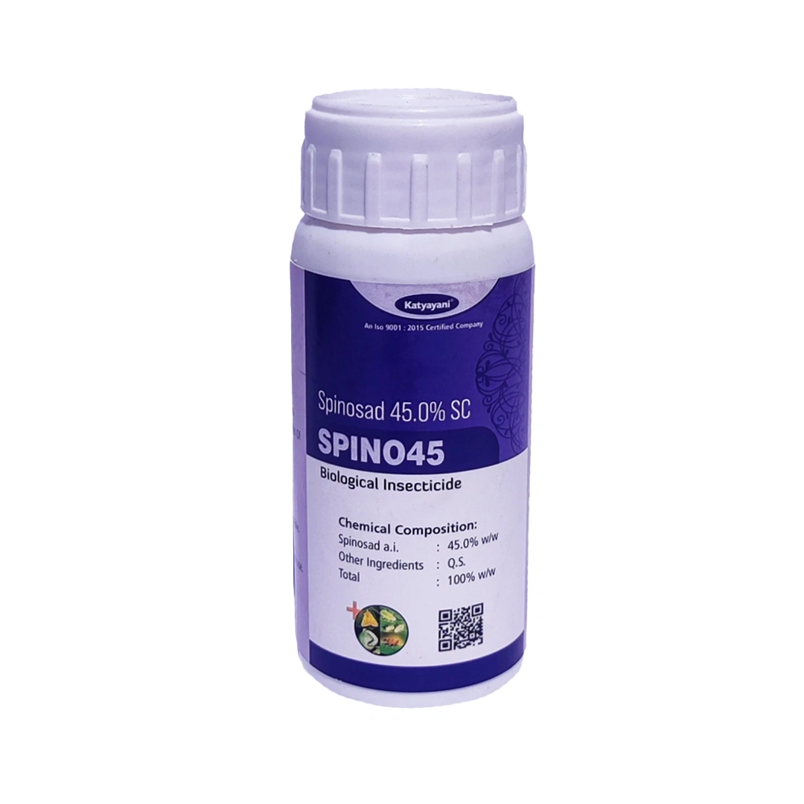
Type: Natural insecticide
Used For: Vegetables, fruits
Targets: Thrips, leafminers, caterpillars
Mode of Action: Activates insect nervous system
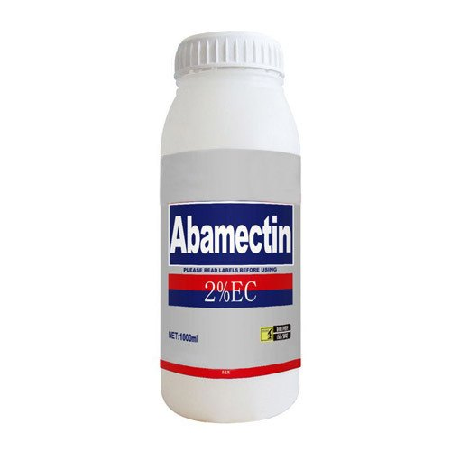
Type: Avermectin insecticide
Used For: Citrus, cotton
Targets: Mites, leafminers
Mode of Action: Affects neurotransmission
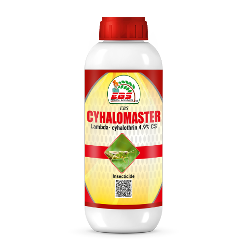
Type: Pyrethroid insecticide
Used For: Corn, cotton
Targets: Beetles, armyworms
Mode of Action: Affects sodium channels in nerves
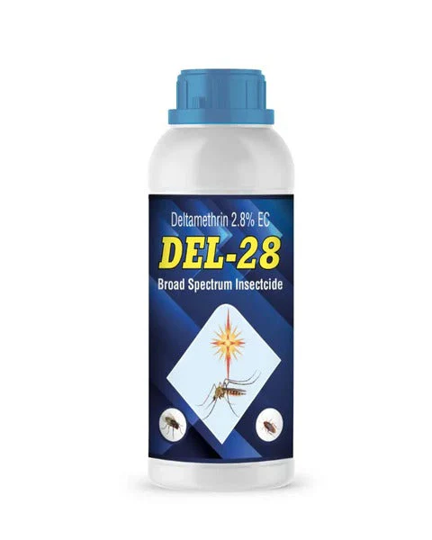
Type: Pyrethroid insecticide
Used For: Vegetables, cereals
Targets: Mites, caterpillars, beetles
Mode of Action: Alters nerve function in insects